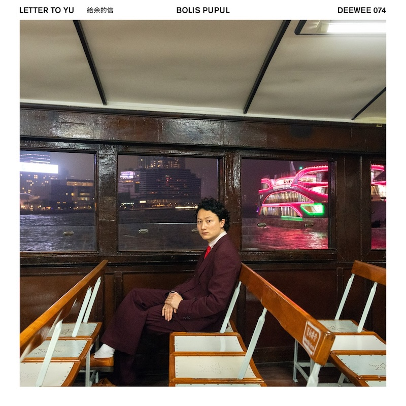

Posted on 2025-01-10 · 4 min read · Twenty Four · Album · Electronic · Bolis Pupul
Contents
Bolis Pupul (the stage name of Boris Zeebroek) is an artist on Soulwax’s Deewee label. “Letter to Yu” is his debut album, inspired by a trip to Hong Kong to investigate his family history. It investigates themes of place, family, and identity. We are exposed to everywhere all at once but we’re also all from somewhere, even if it’s somewhere we might not recommend or understand.
Aside from the theme of the album, it’s a satisfying and varied electronic album.  Cover of Letter to Yu by Bolis Pupul You have a pop song early on in “Completely Half” (“I thought that I / would fit right in / I’m on the border of the state I’m in”) but the rest of side one is fine electro, peaking with the frenetic “Doctor Says” and ebbing out with the ringing “Spicy Crab”. (I realised writing this that the vinyl omits “Frogs” from the streaming version, but this makes the vinyl version of the album better paced.)
Side two has another pop song “Ma Tau Wai Road” featuring vocals by his sister Salah. Then we get “Caseway Bae” which is probably my favourite song with a funky 80s beat and vocodered Cantonese lyrics. The next track “Cantonese” also has cantonese lyrics (“Ngo m sik gong / Gwong dung wa / Ngo ge pou tung wa / Yik dou hou pou tung”) - I think there’s a sprinkling of Mandarin in there too given that the lyrics translate to “I don’t know how to speak Cantonese but my mandarin isn’t any better” - and another strident bass line. “Kowloon” completes the series of three bangers on side two: no vocals, just a skyline sized beat.
The album closes out with “Cosmic Rendez-vous” a recording of in Dutch over a soft piano track. It’s a bit of a change of pace from the previous tracks but it’s a beautiful piece to close on.
I love this album. It’s sad and happy in equal parts. It has some reflective pop songs but also some dancey bangers. Like Sofia Kourtesis’s “Madres” last year it reflects on the global village we live in, while providing us with a new and exciting contribution to its cultural life.
Other options
Because I’ve loved so many albums this year, after each review I am going to include a couple of pointers to additional albums that you might enjoy if you like the album in the main review. This is not me showing off (well, not much), but rather giving credit to the many excellent albums released this year!
Jamie Xx, In Waves
Perhaps too many years on from “In Colour”, the black-and-white artwork and higgledy-piggledy tracklist suggest momentum lost rather than a spectacular follow-up years in the making. At points it’s amazing - I loved the references to so so many 90s dance classics on “Treat Each Other Right” and the woozy hallucinations of “Daffodil” - but there are points when it’s a bit meh like the intro “Wanna” and “Life” with Robyn who’s normally more engaged on tracks like this.
There’s still plenty of good stuff though - “Baddy on the Floor” is ace and so is “All You Children” - it just doesn’t seem to hang together as an album like “In Colour” did. By the time we get to the rave celebration “Falling Together”, you kind of get what the whole album is trying to do - celebrate the universality of dance music and how it brings people together - laudable stuff, but it feels a little forced.
Four Tet, Three
At this point in time a Four Tet album is rarely going to surprise you, he’s largely found his sweet spot and that of his listeners. His last album did feel like a little bit of a mis-fire for being a touch too gauzy and nebulous, but he’s found another vein of form. It’s danceable listenable electronic music that you can eat dinner to or dance the night away too. And for all its pleasantness, there are still some rough edges and distortion to make you sit up now and then.